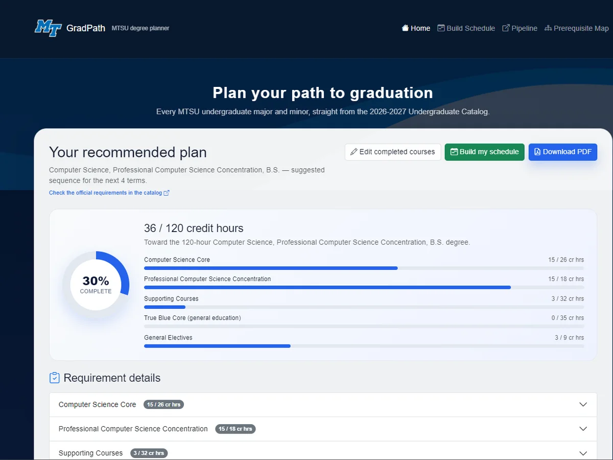

Full-stack · data pipeline
MTSU GradPath
A degree planner for every MTSU undergraduate major, concentration and minor. Check off what you've taken and it builds a term-by-term plan to graduation that respects prerequisites, while a self-updating pipeline keeps the catalog data current.
- 223 majors and concentrations, 152 minors and 3,475 courses from the 2026–27 catalog
- Started as a student team project; I wrote most of the code, including the rewrite from 8 hand-coded majors to all 223 programs
- Python
- Flask
- GitHub Actions
- Mermaid.js
- pytest
- Vercel